Researched, sourced and written down.
Every wall, roof and resident in 4D Chicago traces back to a source, and every gap is written down. This page shows how: photographs matched camera to camera, households read line by line from the census, newspapers read to the column. Most of the examples come from Prairie Avenue in 1904, where the record is richest.
Held up against the photograph.
For every photograph, print and architect's drawing of a building, the picture's camera is solved: where the photographer stood, which way the lens pointed, how wide it saw. The model is then drawn through that same camera and the two are compared. The building is not finished until they agree on everything a person on the street would notice: storeys, bays, openings, roof, chimneys, materials. Drag the line across each pair.
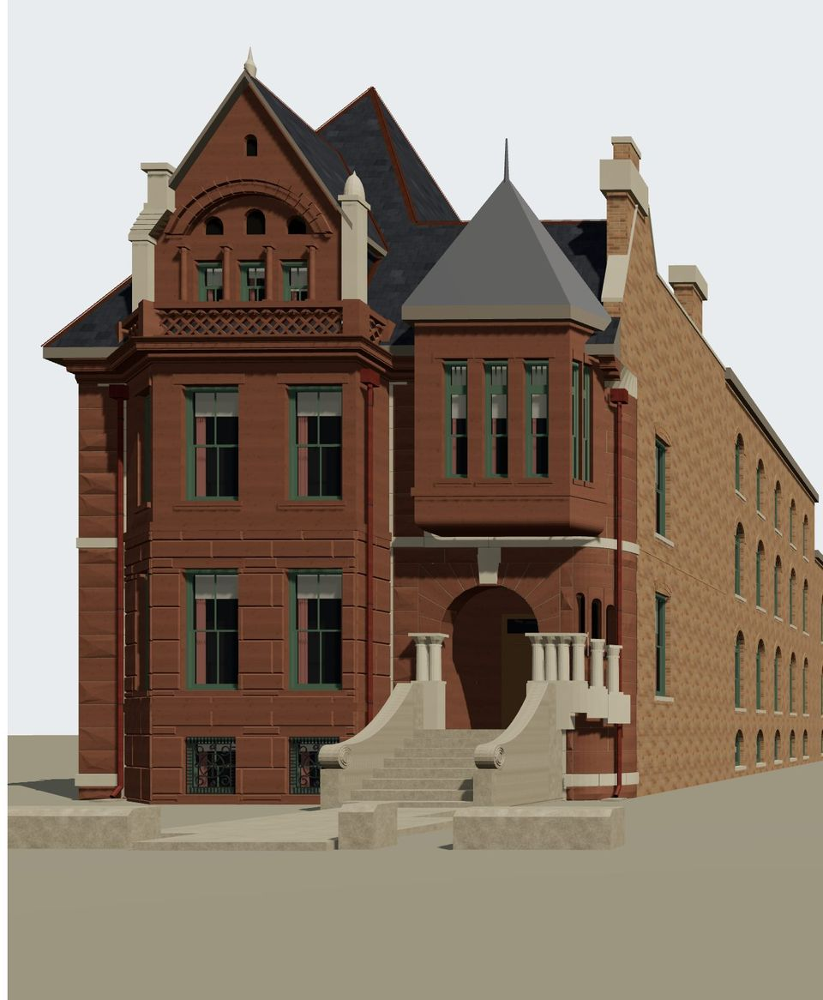
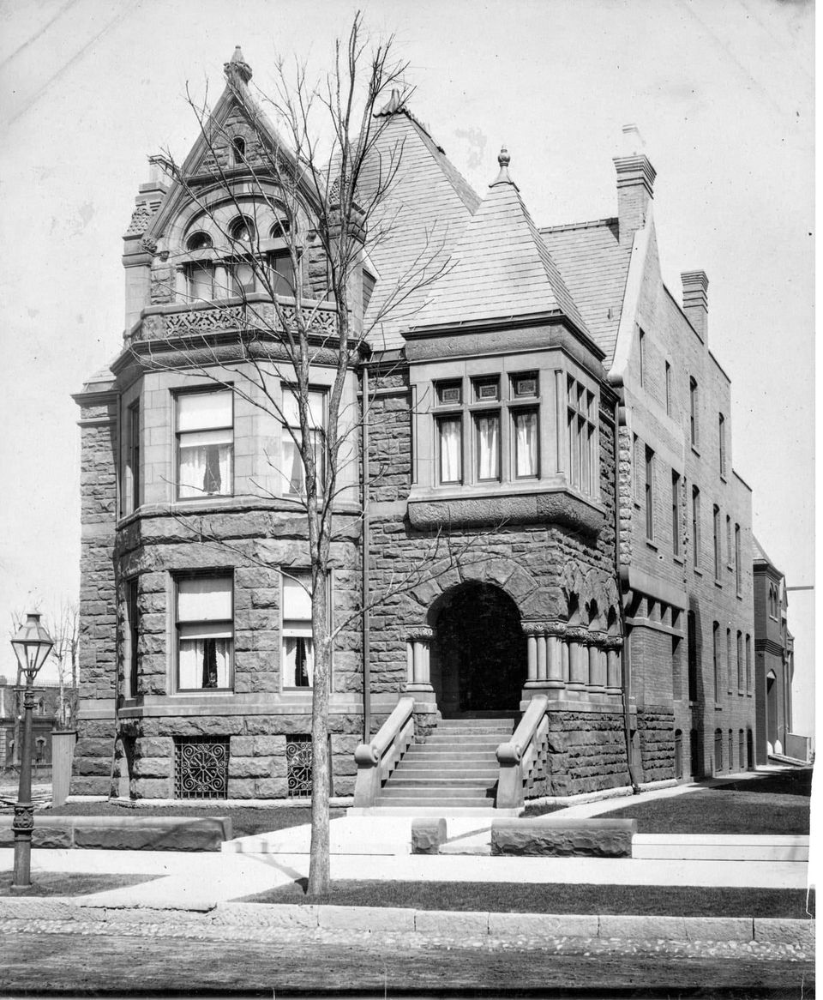
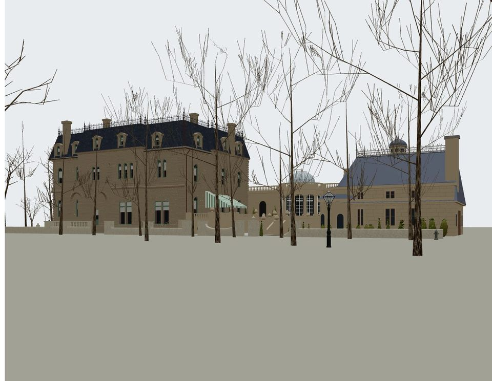
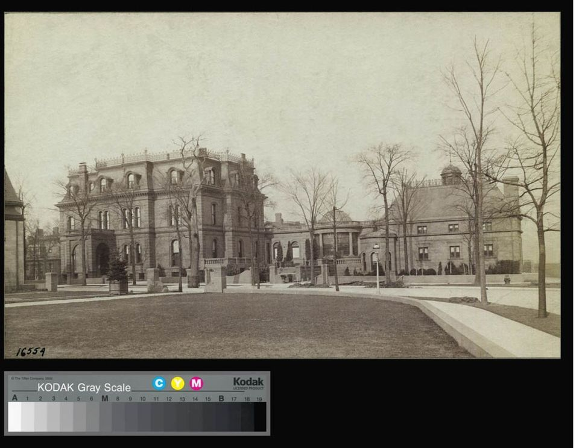
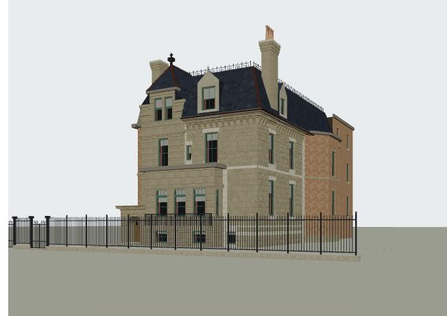
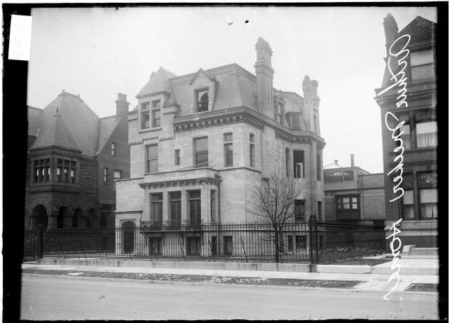
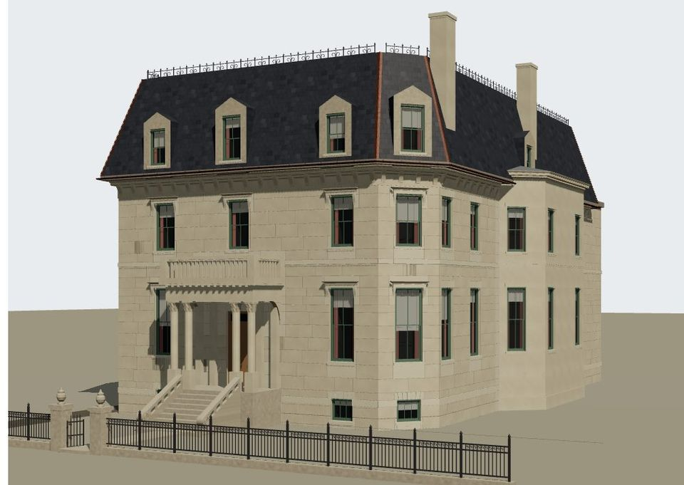
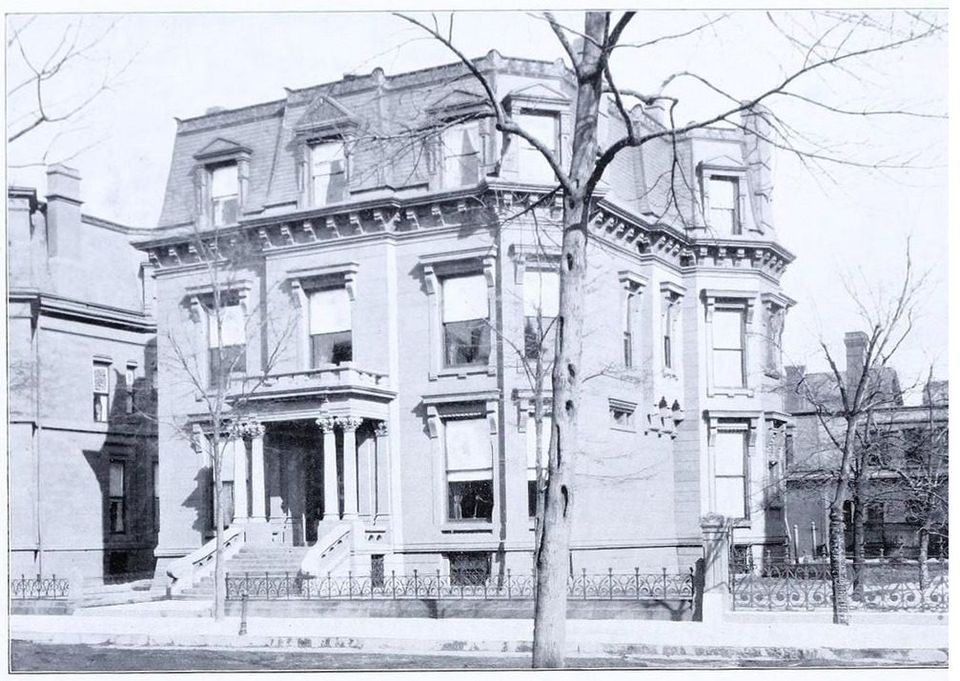
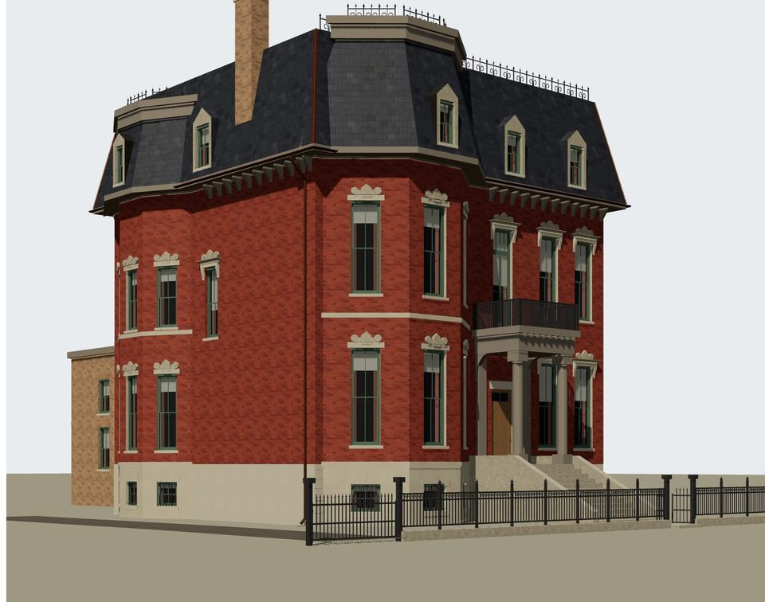
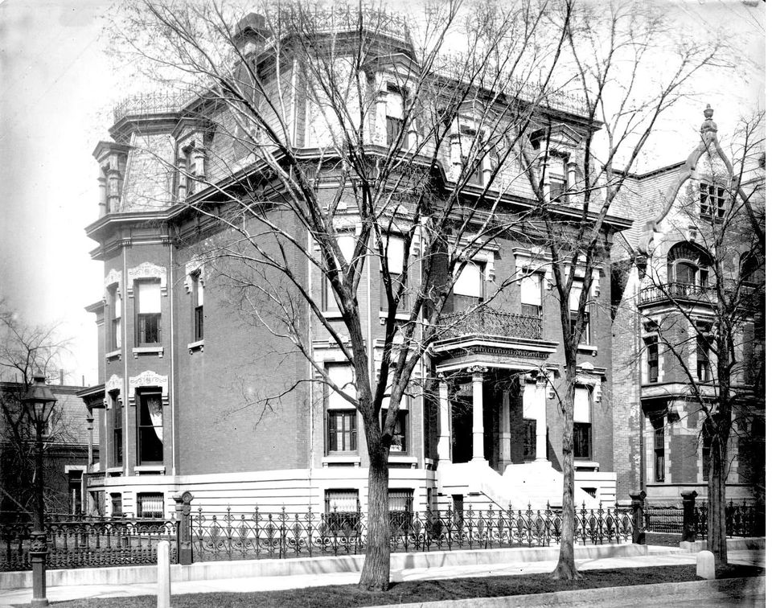
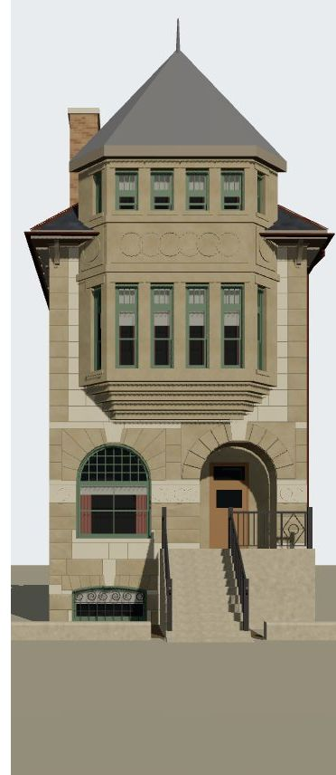
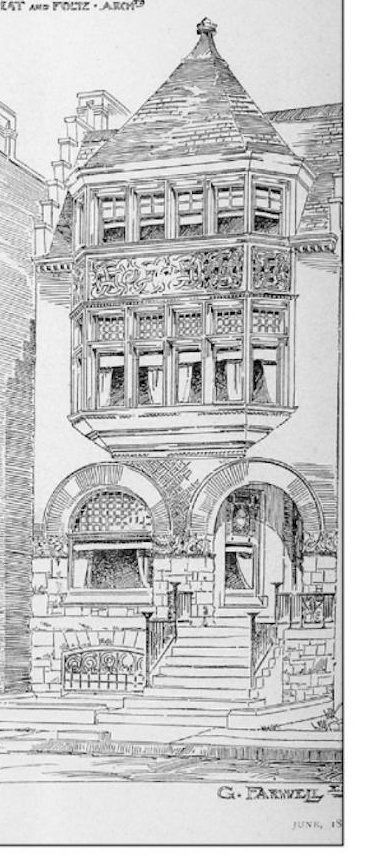
Every match so far, side by side.
218 views of 103 buildings across all four years: 200 read matches, and 18 read differs, each with its open differences listed, so you can see what is still wrong as well as what is right. The models are shown bare, on plain ground, so nothing hides a mismatch.
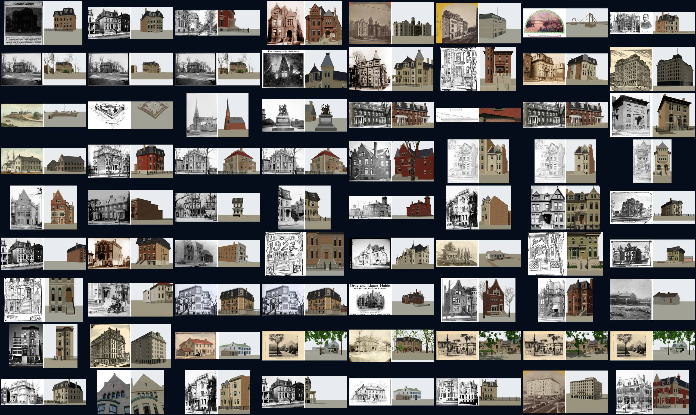
A household, read line by line.
Who lived in each house on 1 July 1904 is read from the 1900 census sheets, the Chicago Blue Book's street lists for 1904 and 1905, which bracket the scene date, the city directories, and the house's own papers. Each person's card carries the line that names them, and a note for anything the sources disagree on.
The card also says who is not there, and why. The 1900 census lists a cook at Glessner House who was only there for the summer; the Glessners' children had married and moved out by 1904. Read alone, the 1900 sheet would put all of them in the house. Here is the household as the town has it:
See the person cardsTap a name for the line that names them and the sources.
John J. GlessnerHead · farm machinery executiveAttested
A partner in Warder, Bushnell and Glessner, and in 1902 one of the four vice presidents of the new International Harvester Company.HABS IL-1015 data, p. 4Glessner House family pageFrances M. GlessnerWifeAttested
No paid occupation recorded. Her journal, kept from 1879 for forty years; her silversmith's bench in the basement from 1904; her bees; the Monday Morning Reading Class in the library from 1893.Glessner House family pageMartha L. (Mattie) WilliamsonCookAttested
Hired as a maid, cook from February 1892 until she left to marry in December 1912, apart from a year away in 1897–98. Written from Frances Glessner's journal.Glessner House Museum, on Mattie Williamson, 2020Christine NelsonParlor maidInferred
Written “Parlor maid” on 1 June 1900. Servants changed places often, and no source read says she was still here in 1904, so she is inferred, not attested.1900 census, ED 40, T623 roll 245Mary ReynoldsHouse maidInferred
Written “House maid” on 1 June 1900; her birth year is hard to read on the sheet. Inferred for 1904, like every servant known only from 1900.1900 census, ED 40, T623 roll 245August BillingsStable helperInferred
Written “Helper” in the rear building on 1 June 1900. Part of the name is hard to read; this is the best reading.1900 census, ED 40, T623 roll 245Charles NelsonCoachman until 1902Inferred
Written “Coachman” in 1900, living in the rear building with his wife and five children. The museum dates his service from 1878 to 1902, so by 1904 he no longer drove for them. Who did, until the family changed to motor cars in 1906, is not recorded.1900 census, T623 roll 245The Glessner Journal, Aug 2021Kate RyanNot in the 1904 houseLeft out
Written “Cook” in 1900, but she was the temporary summer cook while the family and Mattie were at their New Hampshire farm. The Glessners kept one cook at a time, so she is left out of 1904.1900 census, T623 roll 245Bill Tyre, Glessner House, 2026George and Frances GlessnerThe children, moved outLeft out
Both lived here from 1887 and both married in 1898. By 1904 George lived a block north at 1706 and Frances at 1700, in the twin townhouses their parents built. Each has a card there.Blue Book 1895–1898, 1904The Story of a House, 1923
Built from what the paper said.
Where no photograph survives, the press often does. A building described in the Tribune is built to the description, and the article is cited on its card. For 1835, every surviving issue of the town's two papers was read: 73 of the Chicago Democrat and 13 of the Chicago American, and nothing is cited from them without its issue, page and column.
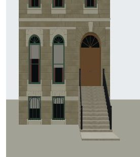
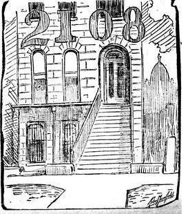
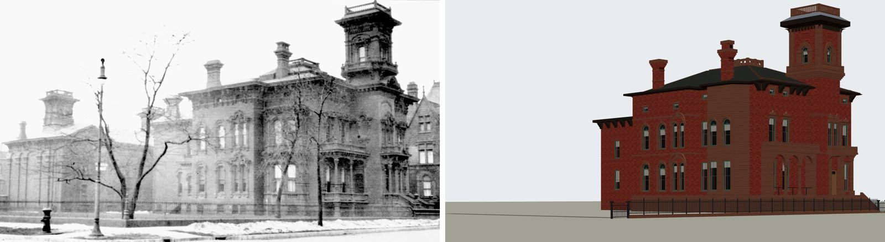
“Chicago Democrat, 1835-07-01, Vol. II, No. 11, issue page 3, column 4.”
A claim that cannot name its column is not made. A read of the scan outranks a transcription, and the transcription's own doubt marks are quoted as they stand. 86 issues of the Democrat and the American, November 1833 to August 1835, were read for people, prices, ships and notices.
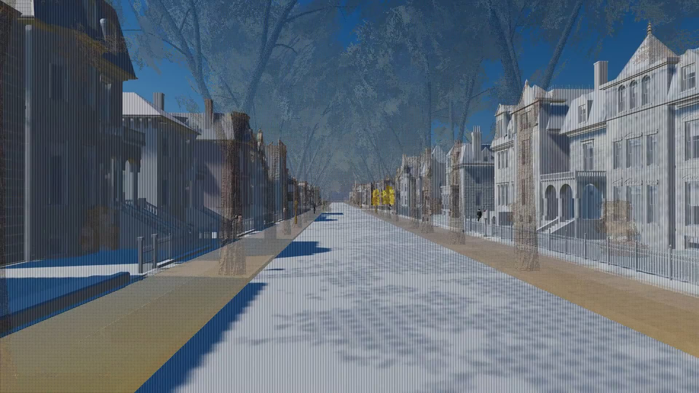
Confidence view · key CHow sure, fact by fact.
Every fact carries one of three grades, and so does every building and person as a whole.
- AttestedA source states it at the scene date. A building is attested when a photograph, print or drawing shows it whole.
- InferredReasoned from evidence about that very thing, with the reasoning written beside it. A Sanborn footprint alone is inferred.
- ReconstructedNo source states it, so it is built within stated limits and declared.
- LibertiesEvery reconstruction is listed by number, with why and how far it goes. A visitor should be able to tell which parts were made up.
1812, 1835 and 1871, the same way.
For Fort Dearborn: Juliette Kinzie's Wau-Bun, the garrison's own returns, the Kinzie house lithographs and the 1815 and 1816 treaties for the Potawatomi people of Chicago, each named where a source names them and declared where not. For 1835: the Thompson plat and its successors, the 1830 and 1840 censuses, the newspapers, N. Roswell Gifford's drawing of Lake Street. For 1871: the fire's own maps and accounts, Andreas's histories, and the stereographs sold in the weeks after it.
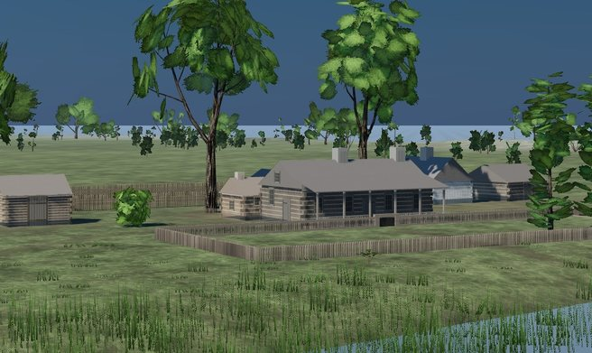


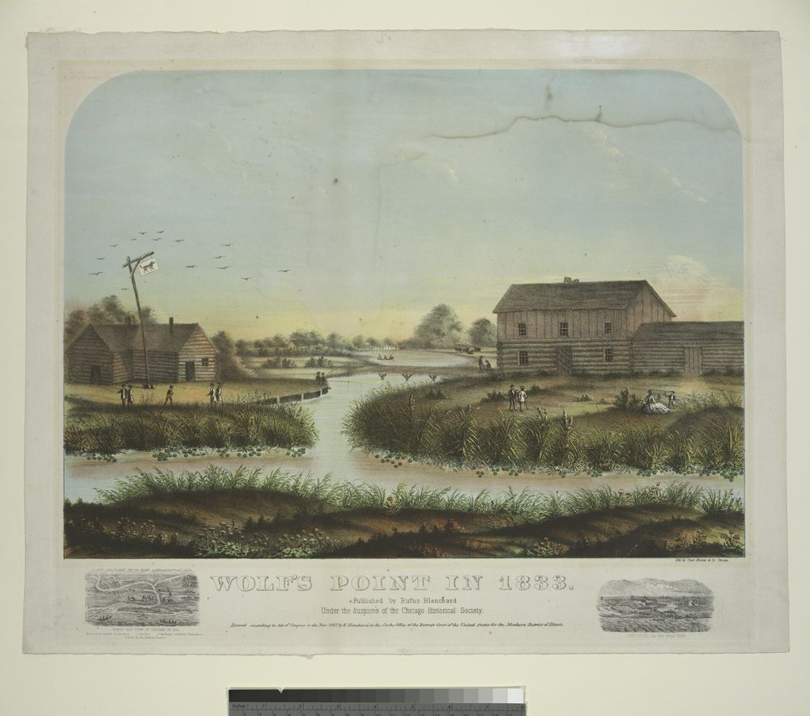
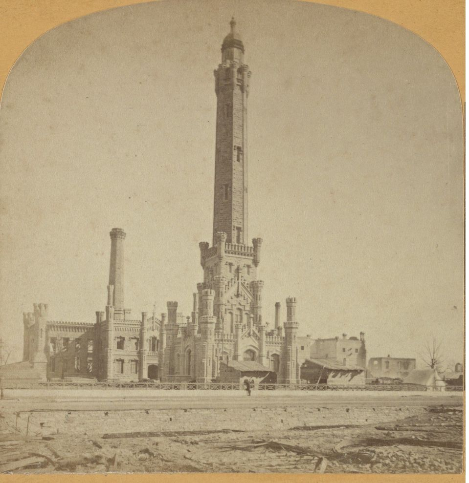
From a census page to a street you can walk.
Five stages, every one of them on the record. Watch a few sources make the trip.
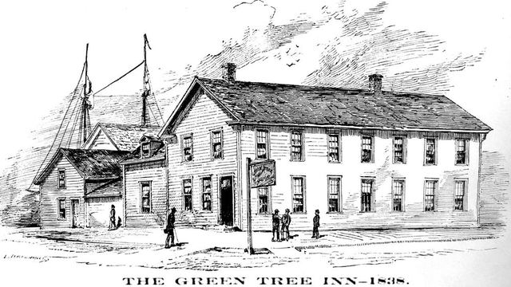
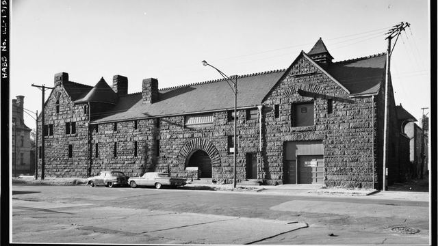
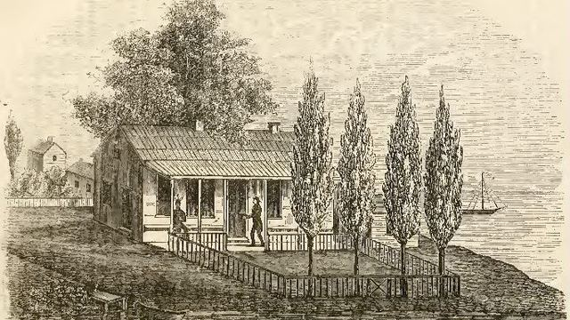
Gather
Maps from the 1830 Thompson plat to the 1911 Sanborn sheets. Manuscript censuses, city directories, HABS photographs, engravings, and memoirs like Juliette Kinzie's Wau-Bun.


Read & place
Maps are pinned to the land-survey grid; the river, the shore and every footprint are traced. Census sheets are read line by line, and each name is matched to a directory entry and a lot.
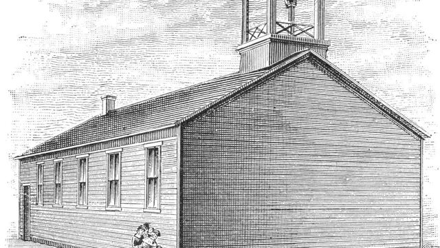
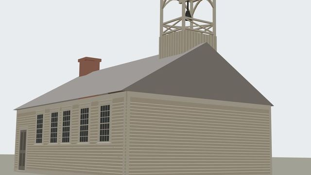
Match & grade
For each picture the photographer's camera is solved and the model compared to it. Every fact is graded attested, inferred or reconstructed, and the gaps stay visible.

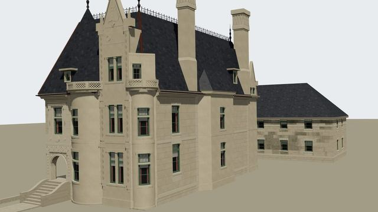
Build
Each record is turned into geometry: walls, roofs, porches, fences, trees. Every model carries its sources with it, so the town can always say where a wall came from.
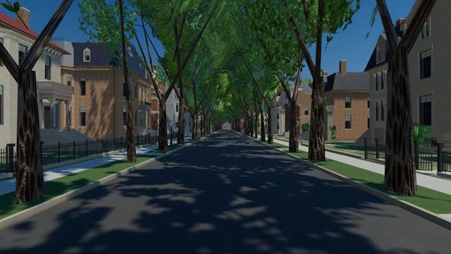
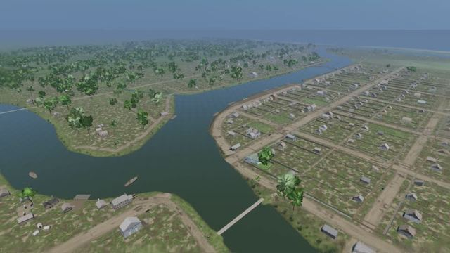
Walk
The year streams into the browser on a phone, a laptop or a headset. Click a building and its record opens; switch on the confidence view and the whole town shows how sure it is.
The research is open.
Check it yourself. Open any card.
Every building and person in town opens a card with its sources and grades. Runs in your browser on a computer, a phone or a VR headset.
Opens the Temporal Observatory · pick a destination · W A S D to walk, or the thumb stick on a phone